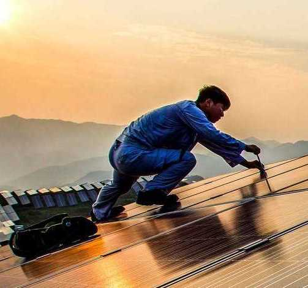
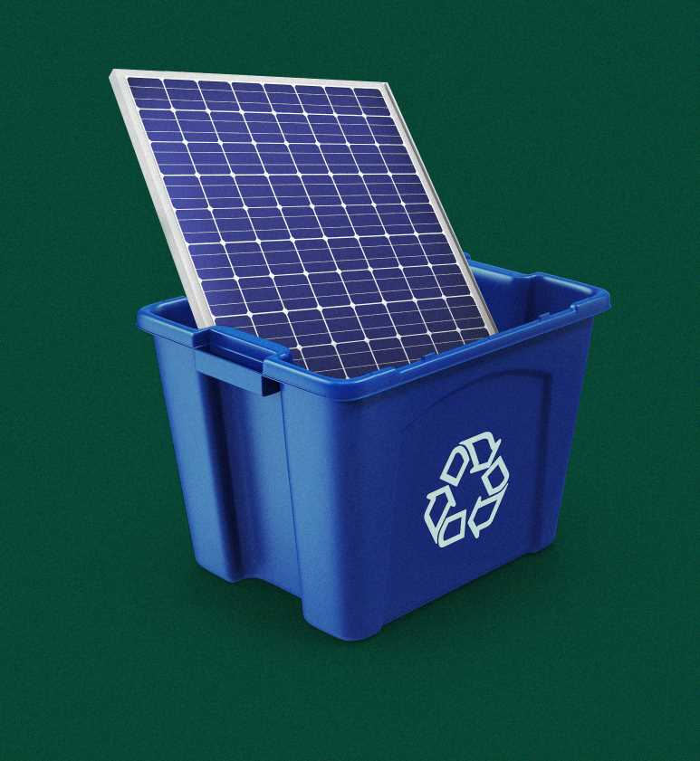

The electricity produced by the solar panel is carbon-free meaning that it does not produce any carbon dioxide for the electricity that it produces.
2.It's 100% renewable
As long as the sun does not go super nova and that we are able to access the sunlight, we will always be able to harvest electricity from the sun.

3.Basically doesn't need maintenance
Since solar panels has no moving parts, there is little to no wear and tear on the panels. Therefore, the panels are able to last up to 30 years without replacements and so, the panels can just be left there to generate electricity without much maintainance.
The use of solar panels can use up alot of space. Not all land are suitable to be used for solar farms since the main requirement is that the location is prefably a sunny environment.

3.Disposal and Recycling
Since the material is exotic, we do not have the capacity to recycle the materials, although the panels takes around 30 years before the need to be disposed, the amount of panels installed can cause issues in the future.